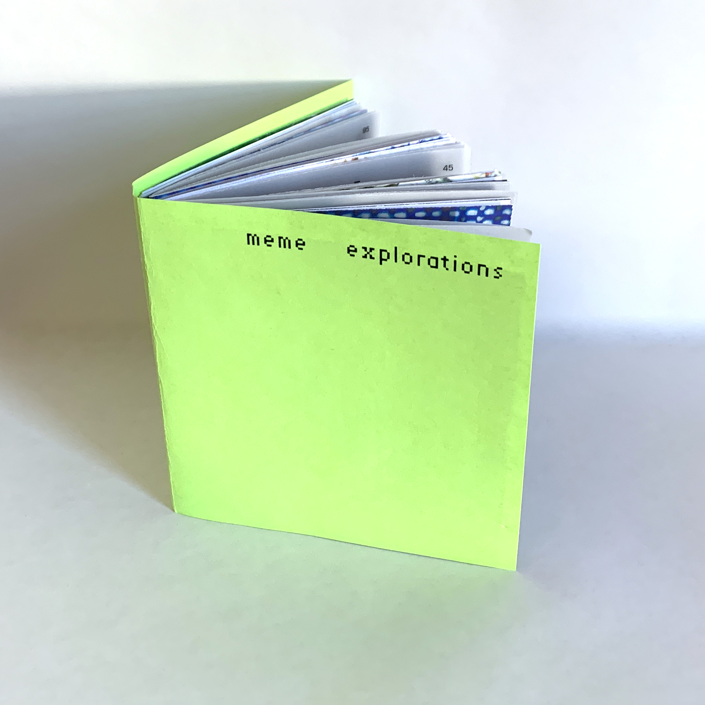
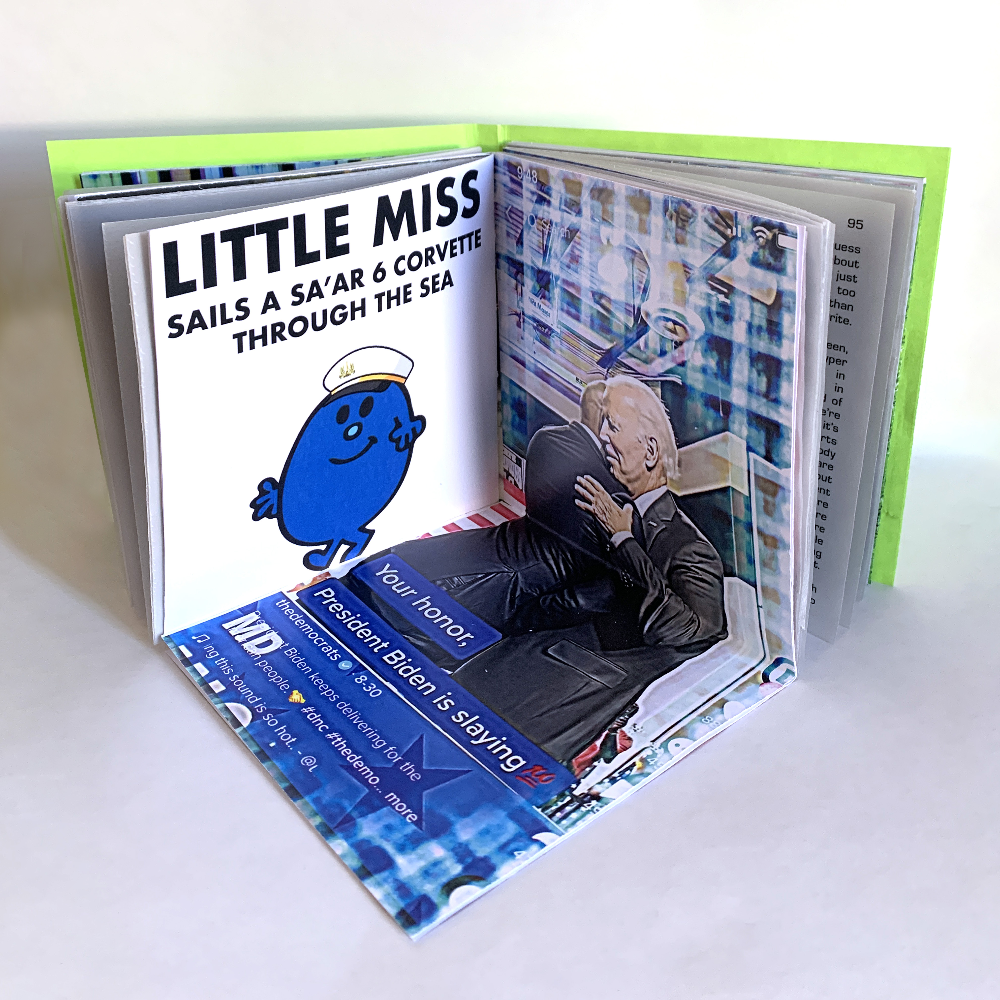
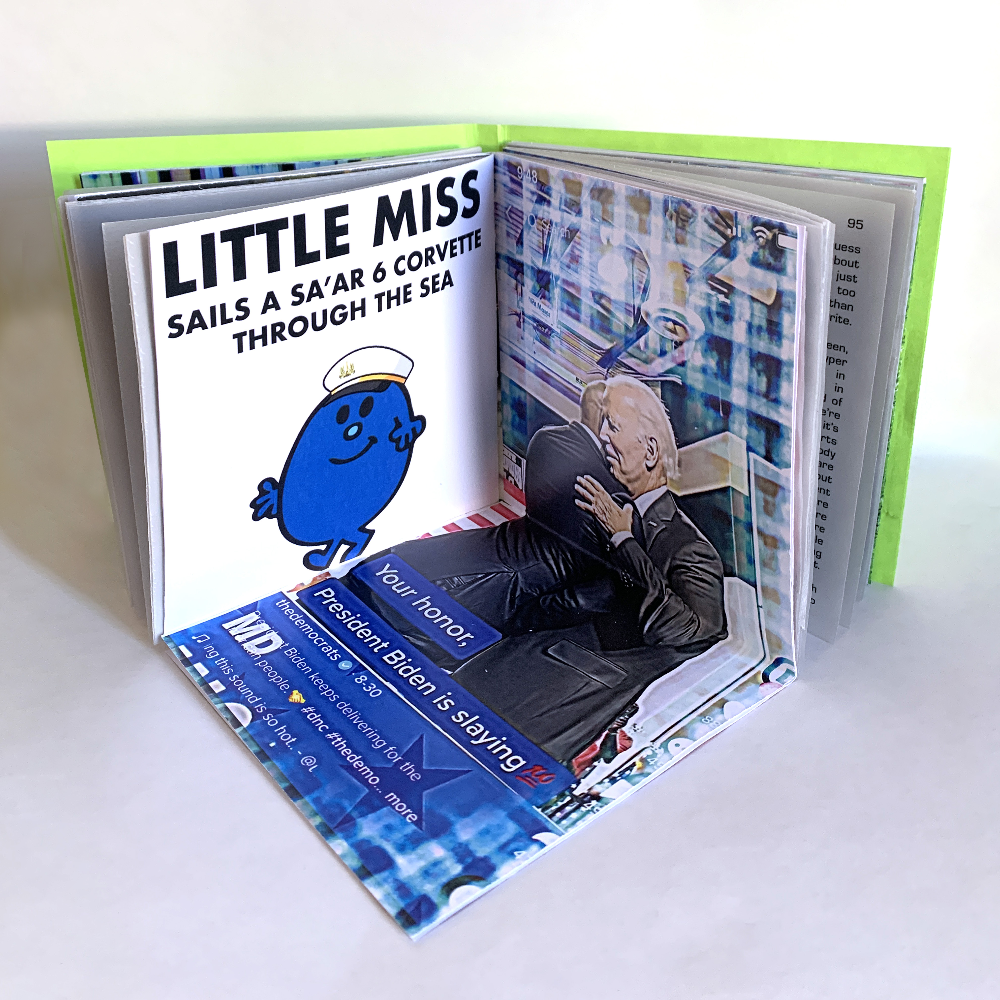

Created as a semester-long project in Graphic Design Intensive 1, Meme Explorations is an investigation about how meme creation has been subverted by brands and politicians as a means of advertisement and propaganda. Featuring interviews from meme creators, meme curators, and meme scholars.

 
